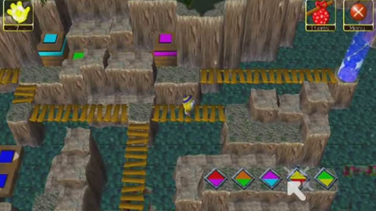
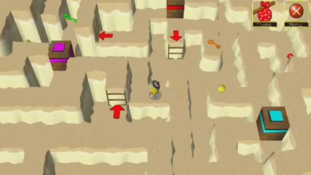
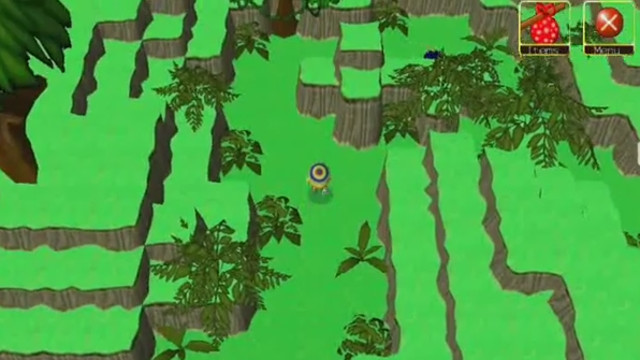

Wonderland Adventures: Mysteries of Fire Island
2008
{kind=link}
I have always been a big fan of Midnight Synergy's Wonderland series. When I heard they were looking for level designers from the community to collaborate with them on their new game, I had to submit an audition. I taught myself how to use the level creation tools and built a decent level pack to demonstrate my skills. I got hired and got to work with a wonderful team of brilliant puzzle designers. I contributed stages to three parts of the game: the jungle canyon, Kaboom village, and the volcano. Beyond this, I also played a role in defining how certain areas in the game would look; notably, I came up with the elevation based visual style of the opening canyon and jungle canyon areas. I was rather inexperienced when I did this work, so while my levels are nice to look at, they do not contain the most interesting puzzles in the game. In fact, the stages I designed were some of the easiest to solve. Wonderland Adventures: Mysteries of Fire Island can be purchased on Midnight Synergy's website.
Credit: The Wonderland and Wonderland Adventures series were created by Midnight Synergy. These games can be found at the Midnight Synergy Website.
 {kind=link}
{kind=link}